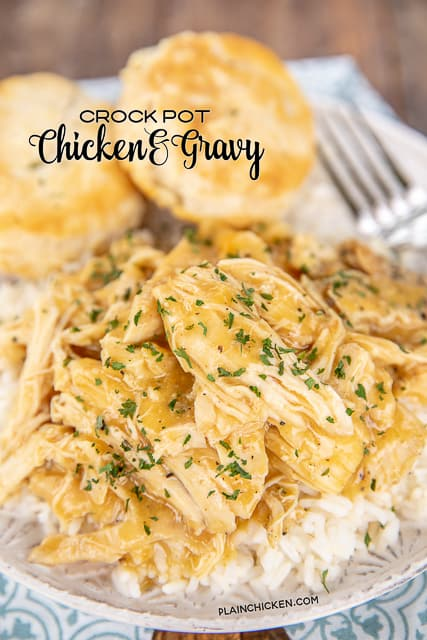

Crock Pot Chicken

Description
I am a huge fan of crockpot meals, especially this time of year. I don’t know about you, but I am really busy during the holiday season. The last thing I want to worry about is dinner. This recipe is super easy and tastes great. Chicken slow-cooked in chicken gravy mix, cream of chicken soup, and chicken broth. Serve the shredded chicken over rice and dinner is done. I used Uncle Ben’s Ready Rice, and dinner was ready in less than 5 minutes after walking in the door! Can’t beat that any time of year!
Ingredients
- 3 to 4 boneless skinless chicken breasts
- 1 (10.5-oz) can Unsalted Cream of Chicken Soup
- 2 (0.87-oz) envelopes of chicken gravy mix
- 1/2 cup water or chicken broth, optional
- Hot steamed rice
Steps
- Place chicken in the slow cooker and season with salt and pepper, if desired
- Whisk together soup, gravy mix, and water (if using). Pour over chicken.
- Cover crock-pot and cook on LOW for 4-6 hours.
- Before serving break the chicken breasts into bite-sized pieces. Serve over hot steamed rice.